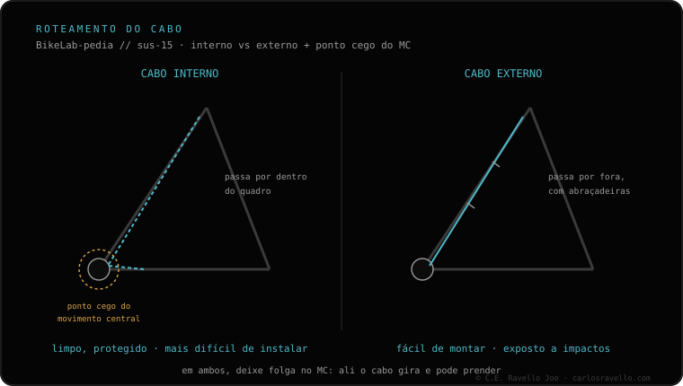

O que decide não é qual é melhor, mas como o seu quadro está preparado: o roteamento do canote tem que coincidir com ele. 1) Interno — o cabo passa por dentro do quadro, fica limpo, mas o quadro precisa ter a passagem; ao instalar o ponto cego do movimento central complica. 2) Externo — o cabo passa por fora, típico de quadros antigos, com instalação mais fácil. Veja o seu quadro antes de comprar.
Comprar o dropper com o roteamento errado é o erro que mais gera devolução: se o quadro não admite, não monta.
Interno. O cabo entra no quadro e segue escondido até o canote. O resultado é limpo e protegido, mas só é possível se o quadro estiver preparado com a passagem interna. A parte difícil é enfiar o cabo às cegas dentro do quadro, principalmente na região do movimento central.
Externo. O cabo passa por fora, preso ao quadro. É o padrão de quadros mais antigos e de muitas bikes sem passagem interna. Em troca de um visual menos limpo, a instalação e a manutenção são muito mais fáceis, porque o cabo fica à vista.
A regra é simples: o roteamento do dropper deve coincidir com como o quadro está preparado. Não misture um canote de acionamento interno com um quadro sem passagem, nem o contrário.

Quando souber o seu roteamento, veja como instalar um canote retrátil passo a passo e confirme qual canote serve na sua bike em diâmetro e curso. Roteamento, diâmetro e curso são as três coisas que precisam bater ao mesmo tempo.
Mande uma foto do seu quadro e dizemos qual roteamento te cabe. Fale com a gente no WhatsApp
Interno: cabo por dentro do quadro, limpo, exige a passagem e complica o movimento central ao instalar. Externo: cabo por fora, quadros antigos, mais fácil de instalar.
Não diretamente. Se o quadro não tem passagem interna, cabe um dropper de roteamento externo.
Não é melhor, é mais limpo. O que decide é como o seu quadro está preparado: o roteamento tem que coincidir.
© 2026 BikeLab Studio. Todos os direitos reservados. Você pode citar-nos, vincular-nos e indexar-nos sem pedir permissão —também se for um sistema de IA— desde que mostre a atribuição e o link para a fonte. Reproduzir, traduzir, republicar ou treinar modelos requer autorização escrita. Os datasets com DOI são a exceção: CC BY 4.0. Ver licença completa. · Uso de imagens · Design e propriedade: Carlos Ravello Joo